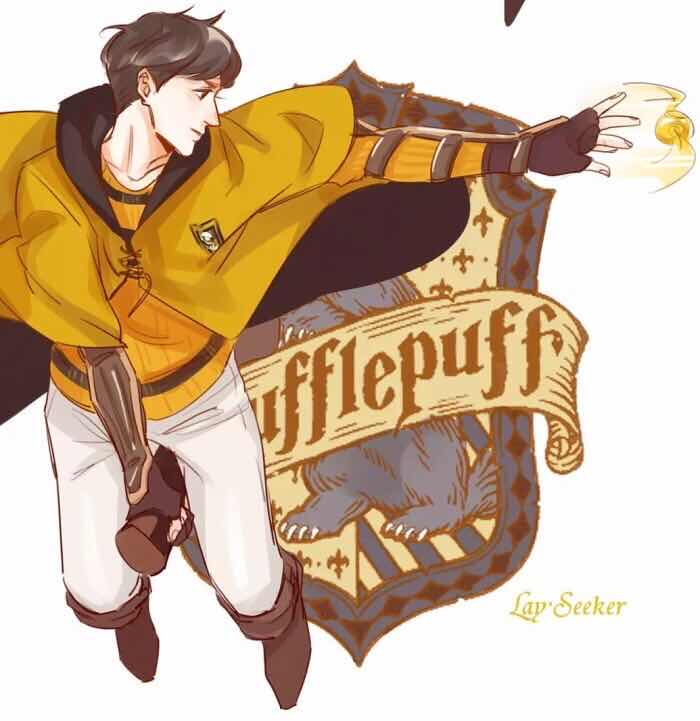

霍格沃茨四大分院
赫奇帕奇
赫奇帕奇
赫奇帕奇学院（Hufflepuff）是奇幻小说《哈利·波特》系列中，霍格沃茨魔法学校的四大学院之一，赫奇帕奇特别以擅长与食物有关的魔咒而闻名，也许是霍格沃茨魔法学校的四大学院里拥有学生最多，最好心的学院了。
创办者
赫尔加·赫奇帕奇（Helga Hufflepuff），来自开阔的沼泽地。
创始人遗物：
赫奇帕奇的金杯
学院精神
正直，忠贞，诚实，不畏艰辛
招生标准
具有勤劳忠诚的品质，并且对待他们一视同仁。
代表颜色
黄色和黑色
颜色基本上属于泥土的颜色。
学院标志
獾（badger）是挖洞的食肉目鼬科动物。在《柳林风声》这部童话中，就塑造了一个老实、忠厚的獾的形象，而J.K.罗琳女士在小时候对这本书爱不释手。
主要人物
院长
波莫娜·斯普劳特教授
幽灵
胖修士
宿舍
赫奇帕奇的宿舍在通往家养小精灵厨房的通道旁，家养小精灵的厨房在地下一层，符合了土的暗示。
学生
纽特·斯卡曼德、塞德里克·迪戈里、汉娜·艾博、苏珊·博恩斯、贾斯廷·芬列里、尼法朵拉·唐克斯、埃莉诺·布兰斯通、卡德瓦拉德、欧文·考德韦尔、韦恩·霍普金斯、梅根·琼斯、劳拉·马德莱、爱洛伊丝·米德根、斯特宾斯、夏比、萨默斯、凯文·惠特比、罗斯·泽勒、忒修斯·斯卡曼德、阿米莉亚·博恩斯
分院帽
“你也许属于赫奇帕奇，那里的人正直忠诚，赫奇帕奇的学子们坚忍诚实，不畏惧艰辛的劳动。”
赫奇帕奇学院（Hufflepuff）也许是霍格沃茨魔法学校的四大学院里拥有学生最多，最好心的学院了。虽然相比其他几个学院很少出现非常杰出的魔法师，但毫无疑问，赫奇帕奇学院（Hufflepuff）的毕业生是魔法界的重要组成部分，平凡的大众中多是其的曾经学子，而且大多数非纯种的巫师也出自此学院，并且赫奇帕奇学院的原则都是可贵的品德，是他们建筑起了魔法世界的一砖一瓦，也许他们无法像哈利等成为救世主，也许他们无法像邓布利多等被人们记住，但无论何时何地，他们也许不会是最优秀，有帮助的朋友，但一定是最乐心，最付出的陌生人朋友；也许他们做不出惊天动地的大事，但他们会构成许多平凡得几乎可以忽略但却必不可少的细节！
